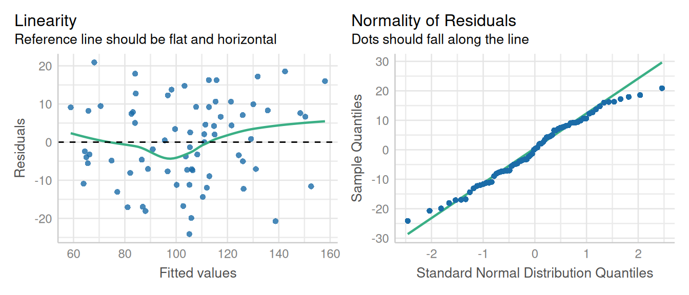
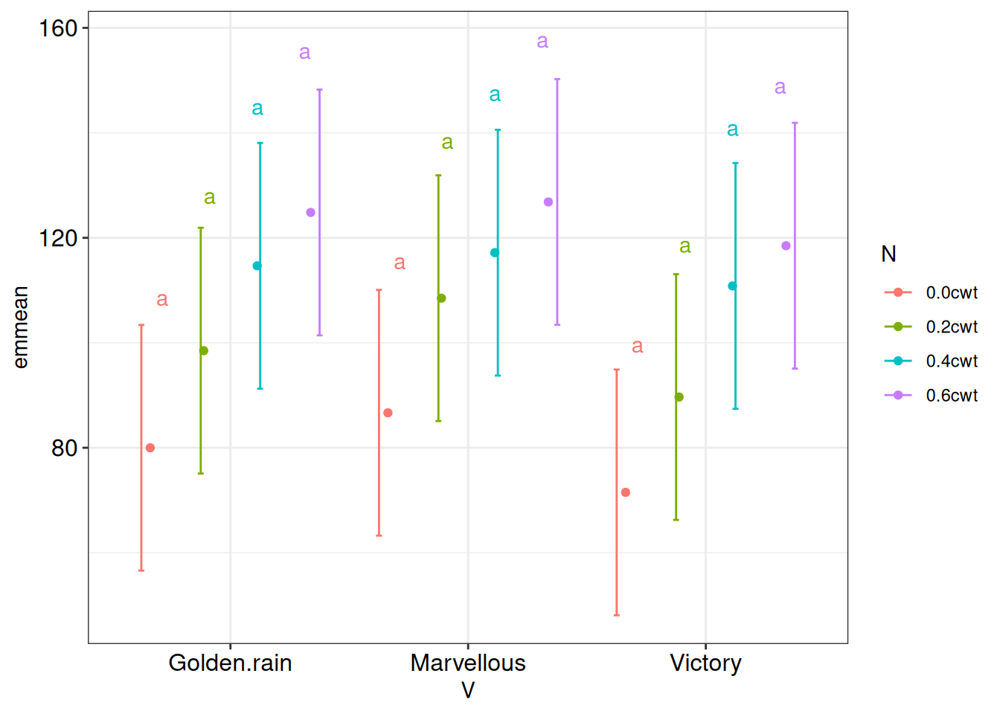

library(nlme); library(performance); library(emmeans)
library(dplyr); library(broom.mixed); library(multcompView)
library(multcomp); library(ggplot2)13 Marginal Means & Contrasts
13.1 Background
To start off with, we need to define estimated marginal means. Estimated marginal means are defined as marginal means of a variable across all levels of other variables in a model, essentially giving a “population-level” average.
The emmeans package is one of the most commonly used package in R in determine marginal means. This package provides methods for obtaining marginal means (also known as least-squares means) for factor combinations in a variety of models. The emmeans package is one of several alternatives to facilitate post-hoc methods application and contrast analysis. It is a relatively recent replacement for the lsmeans package that some R users may be familiar with. It is intended for use with a wide variety of ANOVA models, including repeated measures and nested designs (mixed models). This is a flexible package that comes with a set of detailed vignettes and works with a lot of different model objects.
In this chapter, we will demonstrate the extended use of the emmeans package to calculate estimated marginal means and contrasts.
To demonstrate the use of the emmeans package. We will pull the model from split plot lesson (Chapter 7), where we evaluated the effect of Nitrogen and Variety on Oat yield. This data contains 6 blocks, 3 main plots (Variety) and 4 subplots (Nitrogen). The primary outcome variable was oat yield. To read more about the experiment layout details please read RCBD split-plot section in Chapter 7.
Marginal means using lmer and nlme
For demonstration of the emmeans package, we are fitting model with nlme package. Please note that code below calculating marginal means works for both lmer() and nlme() models.
13.2 Analysis Examples
Let’s start this example by loading the required libraries for fitting linear mixed models using nlme package.
13.2.1 Import data
Let’s import oats data from the MASS package.
data1 <- MASS::oatsTo read more about data and model fitting explanation please refer to Chapter 7.
13.2.2 Model fitting
model1 <- lme(Y ~ V + N + V:N ,
random = ~1|B/V,
data = data1,
na.action = na.exclude)
tidy(model1)Warning in tidy.lme(model1): ran_pars not yet implemented for multiple levels
of nesting# A tibble: 12 × 7
effect term estimate std.error df statistic p.value
<chr> <chr> <dbl> <dbl> <dbl> <dbl> <dbl>
1 fixed (Intercept) 80 9.11 45 8.78 2.56e-11
2 fixed VMarvellous 6.67 9.72 10 0.686 5.08e- 1
3 fixed VVictory -8.5 9.72 10 -0.875 4.02e- 1
4 fixed N0.2cwt 18.5 7.68 45 2.41 2.02e- 2
5 fixed N0.4cwt 34.7 7.68 45 4.51 4.58e- 5
6 fixed N0.6cwt 44.8 7.68 45 5.84 5.48e- 7
7 fixed VMarvellous:N0.2cwt 3.33 10.9 45 0.307 7.60e- 1
8 fixed VVictory:N0.2cwt -0.333 10.9 45 -0.0307 9.76e- 1
9 fixed VMarvellous:N0.4cwt -4.17 10.9 45 -0.383 7.03e- 1
10 fixed VVictory:N0.4cwt 4.67 10.9 45 0.430 6.70e- 1
11 fixed VMarvellous:N0.6cwt -4.67 10.9 45 -0.430 6.70e- 1
12 fixed VVictory:N0.6cwt 2.17 10.9 45 0.199 8.43e- 113.2.3 Check Model Assumptions
check_model(model1, check = c('qq', 'linearity'), detrend=FALSE, alpha = 0)
Residuals look good with a small hump in middle and normality curve looks reasonable.
13.2.4 Model Inference
anova(model1, type = "marginal") numDF denDF F-value p-value
(Intercept) 1 45 77.16732 <.0001
V 2 10 1.22454 0.3344
N 3 45 13.02273 <.0001
V:N 6 45 0.30282 0.9322The analysis of variance showed a significant N effect and no effect of V and V x N interaction effect on oat yield.
13.2.5 Estimated Marginal Means
Now that we have fitted a linear mixed model (model1) and it meets the model assumption. Let’s use the emmeans() function to obtain estimated marginal means for main (variety and nitrogen) and interaction (variety x nitrogen) effects.
13.2.5.1 Main effects
The main effects in model1 were V and N. we will start by looking at the estimated means of V and N main effects.
m1 <- emmeans(model1, ~V, level = 0.95)NOTE: Results may be misleading due to involvement in interactionsm1 V emmean SE df lower.CL upper.CL
Golden.rain 104.5 7.8 5 84.5 125
Marvellous 109.8 7.8 5 89.7 130
Victory 97.6 7.8 5 77.6 118
Results are averaged over the levels of: N
Degrees-of-freedom method: containment
Confidence level used: 0.95 m2 <- emmeans(model1, ~N)NOTE: Results may be misleading due to involvement in interactionsm2 N emmean SE df lower.CL upper.CL
0.0cwt 79.4 7.17 5 60.9 97.8
0.2cwt 98.9 7.17 5 80.4 117.3
0.4cwt 114.2 7.17 5 95.8 132.7
0.6cwt 123.4 7.17 5 104.9 141.8
Results are averaged over the levels of: V
Degrees-of-freedom method: containment
Confidence level used: 0.95 Make sure to read and interpret marginal means carefully. Here, when we calculated marginal means for main effects of V and N, these were averaged over the levels of other factor in experiment. For example, estimated means for each variety were averaged over it’s N treatments, respectively.
13.2.5.2 Interaction effects
Now let’s evaluate the marginal means for the interaction effect of V and N. These can be calculated either using V*N or V|N.
m3 <- emmeans(model1, ~V*N)
m3 V N emmean SE df lower.CL upper.CL
Golden.rain 0.0cwt 80.0 9.11 5 56.6 103.4
Marvellous 0.0cwt 86.7 9.11 5 63.3 110.1
Victory 0.0cwt 71.5 9.11 5 48.1 94.9
Golden.rain 0.2cwt 98.5 9.11 5 75.1 121.9
Marvellous 0.2cwt 108.5 9.11 5 85.1 131.9
Victory 0.2cwt 89.7 9.11 5 66.3 113.1
Golden.rain 0.4cwt 114.7 9.11 5 91.3 138.1
Marvellous 0.4cwt 117.2 9.11 5 93.8 140.6
Victory 0.4cwt 110.8 9.11 5 87.4 134.2
Golden.rain 0.6cwt 124.8 9.11 5 101.4 148.2
Marvellous 0.6cwt 126.8 9.11 5 103.4 150.2
Victory 0.6cwt 118.5 9.11 5 95.1 141.9
Degrees-of-freedom method: containment
Confidence level used: 0.95 m4 <- emmeans(model1, ~V|N)
m4N = 0.0cwt:
V emmean SE df lower.CL upper.CL
Golden.rain 80.0 9.11 5 56.6 103.4
Marvellous 86.7 9.11 5 63.3 110.1
Victory 71.5 9.11 5 48.1 94.9
N = 0.2cwt:
V emmean SE df lower.CL upper.CL
Golden.rain 98.5 9.11 5 75.1 121.9
Marvellous 108.5 9.11 5 85.1 131.9
Victory 89.7 9.11 5 66.3 113.1
N = 0.4cwt:
V emmean SE df lower.CL upper.CL
Golden.rain 114.7 9.11 5 91.3 138.1
Marvellous 117.2 9.11 5 93.8 140.6
Victory 110.8 9.11 5 87.4 134.2
N = 0.6cwt:
V emmean SE df lower.CL upper.CL
Golden.rain 124.8 9.11 5 101.4 148.2
Marvellous 126.8 9.11 5 103.4 150.2
Victory 118.5 9.11 5 95.1 141.9
Degrees-of-freedom method: containment
Confidence level used: 0.95 The marginal means (m3 and m4) gives the results for V x N interaction effect but the calculated differently.
Note
Here, note that we estimated marginal means in two ways: V*N estimate the marginal means for each combination and when we do pairwise compariosn on these, all combinations are compared to one another simultaneously.
V|N estimates the marginal means for each V at a given level of N. When we do pairwise comparison on this, V groups are compared among each other at a given level of N, not across all levels of N.
13.3 Contrasts using emmeans
The pairs() function from emmeans package can be used to evaluate the pairwise comparison among treatment objects. The emmean object (m1, m2) will be passed through pairs() function which will provide a p-value adjustment equivalent to the Tukey test.
pairs(m1, adjust = "tukey") contrast estimate SE df t.ratio p.value
Golden.rain - Marvellous -5.29 7.08 10 -0.748 0.7419
Golden.rain - Victory 6.88 7.08 10 0.971 0.6104
Marvellous - Victory 12.17 7.08 10 1.719 0.2458
Results are averaged over the levels of: N
Degrees-of-freedom method: containment
P value adjustment: tukey method for comparing a family of 3 estimates pairs(m2) contrast estimate SE df t.ratio p.value
0.0cwt - 0.2cwt -19.50 4.44 45 -4.396 0.0004
0.0cwt - 0.4cwt -34.83 4.44 45 -7.853 <.0001
0.0cwt - 0.6cwt -44.00 4.44 45 -9.919 <.0001
0.2cwt - 0.4cwt -15.33 4.44 45 -3.457 0.0064
0.2cwt - 0.6cwt -24.50 4.44 45 -5.523 <.0001
0.4cwt - 0.6cwt -9.17 4.44 45 -2.067 0.1797
Results are averaged over the levels of: V
Degrees-of-freedom method: containment
P value adjustment: tukey method for comparing a family of 4 estimates Here if we look at the results from code chunk above, it’s easy to interpret results from pairs() function in case of variety comparison because there were only 3 groups. But it’s little confusing in case of Nitrogen treatments where we had 4 groups. We can further simplify it by using custom contrasts.
pairs()
This function is conducting all pairwise tests for the variable specified. The default p-value adjustment in pairs() function is “tukey”; other options include “holm”, “hochberg”, “BH”, “BY”, and “none”. If you are conducting this on a variable with many levels, this adjustment can be severe, resulting in very few statistically significant results. To avoid this, consider other tests such ‘compare to a control’ or custom contrasts.
13.3.1 Custom contrasts
First, run emmean object ‘m2’ for nitrogen treatments.
m2 N emmean SE df lower.CL upper.CL
0.0cwt 79.4 7.17 5 60.9 97.8
0.2cwt 98.9 7.17 5 80.4 117.3
0.4cwt 114.2 7.17 5 95.8 132.7
0.6cwt 123.4 7.17 5 104.9 141.8
Results are averaged over the levels of: V
Degrees-of-freedom method: containment
Confidence level used: 0.95 Now, let’s create a vector for each nitrogen treatment in the same order as presented in output from m2.
A1 = c(1, 0, 0, 0)
A2 = c(0, 1, 0, 0)
A3 = c(0, 0, 1, 0)
A4 = c(0, 0, 0, 1)These vectors (A1, A2, A3, A4) represent each Nitrogen treatment in an order as presented in m2 emmeans object. A1, A2, and A3, A4 vectors represents 0.0 cwt, 0.2 cwt, 0.4 cwt, and 0.6 cwt treatments, respectively.
Next step is to create a custom contrasts for comparing ‘0.0cwt’ (A1) treatment to ‘0.2cwt’ (A2), ‘0.4cwt’ (A3), and ‘0.6cwt’ (A4) treatments. This can be evaluated as shown below:
contrast(m2, method = list(A1 - A2) ) contrast estimate SE df t.ratio p.value
c(1, -1, 0, 0) -19.5 4.44 45 -4.396 0.0001
Results are averaged over the levels of: V
Degrees-of-freedom method: containment contrast(m2, method = list(A1 - A3) ) contrast estimate SE df t.ratio p.value
c(1, 0, -1, 0) -34.8 4.44 45 -7.853 <.0001
Results are averaged over the levels of: V
Degrees-of-freedom method: containment contrast(m2, method = list(A1 - A4) ) contrast estimate SE df t.ratio p.value
c(1, 0, 0, -1) -44 4.44 45 -9.919 <.0001
Results are averaged over the levels of: V
Degrees-of-freedom method: containment Here the output shows the difference in mean yield between control and 3 N treatments. The results shows that yield was significantly higher N treatments compared to the control (0.0 cwt) irrespective of the oat variety.
contrast() vs pairs()
Using custom contrast() is strongly recommended instead of pairs() when you are comparing multiple treatment groups (>5).
In addition to these conventional custom contrast options, emmeans package allows to do some easy contrasts such as comparing all the treatments to control or estimating custom contrast to compare one treatment level to all other groups.
We will start with running ‘m1’ emmeans object
m1 V emmean SE df lower.CL upper.CL
Golden.rain 104.5 7.8 5 84.5 125
Marvellous 109.8 7.8 5 89.7 130
Victory 97.6 7.8 5 77.6 118
Results are averaged over the levels of: N
Degrees-of-freedom method: containment
Confidence level used: 0.95 Based on m1 object, let’s assume we want to compare all varieties with Marvellous. The code shown below estimates custom contrast for treatments vs control and here we are referring Marvellous variety as a control.
contrast(m1, "trt.vs.ctrl", ref = "Marvellous") contrast estimate SE df t.ratio p.value
Golden.rain - Marvellous -5.29 7.08 10 -0.748 0.6833
Victory - Marvellous -12.17 7.08 10 -1.719 0.2045
Results are averaged over the levels of: N
Degrees-of-freedom method: containment
P value adjustment: dunnettx method for 2 tests Or we can refer control group by the appearance order of varieties in m1. In m1, order of Golden rain, Marvellous, and Victory are ordered as 1, 2, and 3 respenctively.
Let’s suppose we want to compare Golden rain to other varieties, we can do this by either trt.vs.ctrl1' code, ortrt.vs.ctrlk` and referring to group 1. Both code options will generate same results.
contrast(m1, "trt.vs.ctrl1") contrast estimate SE df t.ratio p.value
Marvellous - Golden.rain 5.29 7.08 10 0.748 0.6833
Victory - Golden.rain -6.88 7.08 10 -0.971 0.5476
Results are averaged over the levels of: N
Degrees-of-freedom method: containment
P value adjustment: dunnettx method for 2 tests contrast(m1, "trt.vs.ctrlk", ref = 1) contrast estimate SE df t.ratio p.value
Marvellous - Golden.rain 5.29 7.08 10 0.748 0.6833
Victory - Golden.rain -6.88 7.08 10 -0.971 0.5476
Results are averaged over the levels of: N
Degrees-of-freedom method: containment
P value adjustment: dunnettx method for 2 tests We can further customize the contrasts by excluding specific treatment groups from the comparison.
we can demonstrate this by running m2 object first.
m2 N emmean SE df lower.CL upper.CL
0.0cwt 79.4 7.17 5 60.9 97.8
0.2cwt 98.9 7.17 5 80.4 117.3
0.4cwt 114.2 7.17 5 95.8 132.7
0.6cwt 123.4 7.17 5 104.9 141.8
Results are averaged over the levels of: V
Degrees-of-freedom method: containment
Confidence level used: 0.95 We can conduct a pairwise comparison by excluding 0.2 cwt.
pairs(m2, exclude = 2) contrast estimate SE df t.ratio p.value
0.0cwt - 0.4cwt -34.83 4.44 45 -7.853 <.0001
0.0cwt - 0.6cwt -44.00 4.44 45 -9.919 <.0001
0.4cwt - 0.6cwt -9.17 4.44 45 -2.067 0.1084
Results are averaged over the levels of: V
Degrees-of-freedom method: containment
P value adjustment: tukey method for comparing a family of 3 estimates Or we can also evaluate pairwise comparison
contrast(m2, "consec") contrast estimate SE df t.ratio p.value
0.2cwt - 0.0cwt 19.50 4.44 45 4.396 0.0002
0.4cwt - 0.2cwt 15.33 4.44 45 3.457 0.0033
0.6cwt - 0.4cwt 9.17 4.44 45 2.067 0.1152
Results are averaged over the levels of: V
Degrees-of-freedom method: containment
P value adjustment: mvt method for 3 tests 13.4 Compact letter displays
Compact letter displays (CLDs) are a popular way to display multiple comparisons when there are more than few group means to compare. However, they are problematic as they are more prone to misinterpretation. The R package multcompView (Graves et al., 2019) provides an implementation of CLDs creating a display where any two means associated with same symbol are not statistically different.
The cld() function from the multcomp package is used to implement CLDs in the form of symbols or letters. The emmeans package provides a emmGrid objects for cld() method.
Let’s start evaluating CLDs for main effects. We will use emmean objects m1 (for variety) and m2 (for nitrogen) for this. In the output below, groups sharing a letter in the \(.group\) are not statistically different from each other.
cld(m1, alpha=0.05, Letters=letters) V emmean SE df lower.CL upper.CL .group
Victory 97.6 7.8 5 77.6 118 a
Golden.rain 104.5 7.8 5 84.5 125 a
Marvellous 109.8 7.8 5 89.7 130 a
Results are averaged over the levels of: N
Degrees-of-freedom method: containment
Confidence level used: 0.95
P value adjustment: tukey method for comparing a family of 3 estimates
significance level used: alpha = 0.05
NOTE: If two or more means share the same grouping symbol,
then we cannot show them to be different.
But we also did not show them to be the same. cld(m2, alpha=0.05, Letters=letters) N emmean SE df lower.CL upper.CL .group
0.0cwt 79.4 7.17 5 60.9 97.8 a
0.2cwt 98.9 7.17 5 80.4 117.3 b
0.4cwt 114.2 7.17 5 95.8 132.7 c
0.6cwt 123.4 7.17 5 104.9 141.8 c
Results are averaged over the levels of: V
Degrees-of-freedom method: containment
Confidence level used: 0.95
P value adjustment: tukey method for comparing a family of 4 estimates
significance level used: alpha = 0.05
NOTE: If two or more means share the same grouping symbol,
then we cannot show them to be different.
But we also did not show them to be the same. Let’s have a look at the CLDs for the interaction effect:
cld3 <- cld(m3, alpha=0.05, Letters=letters)
cld3 V N emmean SE df lower.CL upper.CL .group
Victory 0.0cwt 71.5 9.11 5 48.1 94.9 a
Golden.rain 0.0cwt 80.0 9.11 5 56.6 103.4 abcde
Marvellous 0.0cwt 86.7 9.11 5 63.3 110.1 abc fg
Victory 0.2cwt 89.7 9.11 5 66.3 113.1 ab d f h
Golden.rain 0.2cwt 98.5 9.11 5 75.1 121.9 abcdefghi
Marvellous 0.2cwt 108.5 9.11 5 85.1 131.9 abcdefghi
Victory 0.4cwt 110.8 9.11 5 87.4 134.2 bcdefghi
Golden.rain 0.4cwt 114.7 9.11 5 91.3 138.1 fghi
Marvellous 0.4cwt 117.2 9.11 5 93.8 140.6 de hi
Victory 0.6cwt 118.5 9.11 5 95.1 141.9 c e g i
Golden.rain 0.6cwt 124.8 9.11 5 101.4 148.2 fghi
Marvellous 0.6cwt 126.8 9.11 5 103.4 150.2 hi
Degrees-of-freedom method: containment
Confidence level used: 0.95
P value adjustment: tukey method for comparing a family of 12 estimates
significance level used: alpha = 0.05
NOTE: If two or more means share the same grouping symbol,
then we cannot show them to be different.
But we also did not show them to be the same. Interpretation of these letters is: Here we have a significant difference in grain yield with varieties victory, with N treatments of 0.0 cwt, 0.2 cwt, 0.4 cwt, and 0.6 wt. Grain yield for Golden rain variety was significantly lower with 0.0 cwt N treatment compared to the 0.2 cwt, 0.4 cwt, and 0.6 wt treatments.
In the data set we used for demonstration here, we had equal number of observations in each group. However, this might not be a case every time as it is common to have missing values in the data set. In such cases, readers usually struggle to interpret significant differences among groups. For example, estimated means of two groups are substantially different but they are no statistically different. This normally happens when SE of one group is large due to its small sample size, so it’s hard for it to be statistically different from other groups. In such cases, we can use alternatives to CLDs as shown below.
13.5 Alternatives to CLD
- Equivalence test
Let’s assume based on subject matter considerations, if mean yield of two groups differ by less than 30 can be considered equivalent. Let’s try equivalence test on clds of nitrogen treatment emmeans (m2).
cld(m2, delta = 30, adjust = "none") N emmean SE df lower.CL upper.CL .equiv.set
0.0cwt 79.4 7.17 5 60.9 97.8 1
0.2cwt 98.9 7.17 5 80.4 117.3 12
0.4cwt 114.2 7.17 5 95.8 132.7 23
0.6cwt 123.4 7.17 5 104.9 141.8 3
Results are averaged over the levels of: V
Degrees-of-freedom method: containment
Confidence level used: 0.95
Statistics are tests of equivalence with a threshold of 30
P values are left-tailed
significance level used: alpha = 0.05
Estimates sharing the same symbol test as equivalent Here, two treatment groups 0.0 cwt and 0.2 cwt, 0.4 cwt and 0.6 cwt can be considered equivalent.
- Significance Sets
Another alternative is to simply reverse all the boolean flags we used in constructing CLDs for m3 first time.
cld(m2, signif = TRUE) N emmean SE df lower.CL upper.CL .signif.set
0.0cwt 79.4 7.17 5 60.9 97.8 12
0.2cwt 98.9 7.17 5 80.4 117.3 12
0.4cwt 114.2 7.17 5 95.8 132.7 1
0.6cwt 123.4 7.17 5 104.9 141.8 2
Results are averaged over the levels of: V
Degrees-of-freedom method: containment
Confidence level used: 0.95
P value adjustment: tukey method for comparing a family of 4 estimates
significance level used: alpha = 0.05
Estimates sharing the same symbol are significantly different
Cautionary Note about CLD
It’s important to note that we cannot conclude that treatment levels with the same letter are the same. We can only conclude that they are not different.
There is a separate branch of statistics, equivalence testing that is for ascertaining if things are sufficiently similar to conclude they are equivalent.
See Section 2.0.4 for additional warnings about problems with using compact letter display.
13.6 Export emmeans to excel sheet
The outputs from emmeans() or cld() objects can exported by first converting outputs to a data frame and then using writexlsx() function from the ‘writexl’ package to export the outputs.
result_n <- as.data.frame(summary(m1))writexl::write_xlsx(result_n)13.7 Graphical display of emmeans
The easiest option is to use default plotting functions that accompany the emmeans package.
plot(m1)
plot(m4)pwpp(m1) # Harpreet: do we need to keep it?Eventually, you are likely to want customized plots of model estimates. To do this, the means will have to be manually extracted and converted to a dataframe for usage by plotting libraries. The outputs from the cld3 object (yield of variety within each nitrogen level) can be visualized in ggplot, with variety on x-axis and estimated means of yield on y-axis. Different N treatments are presented using different colors.
ggplot(cld3) +
aes(x = V, y = emmean, color = N) +
geom_point(position = position_dodge(width = 0.9)) +
geom_errorbar(mapping = aes(ymin = lower.CL, ymax = upper.CL),
position = position_dodge(width = 1),
width = 0.1) +
geom_text(mapping = aes(label = .group, y = upper.CL * 1.05),
position = position_dodge(width = 0.8),
show.legend = F)+
theme_bw()+
theme(axis.text= element_text(color = "black",
size =12))Recall: groups that do not differ significantly from each other share the same letter.
we can also use emmip() built in emmeans package to look at the trend in interaction of variety and nitrogen factors.
emmip(model1, N ~ V)
More details on emmeans
If you want to read more about emmeans, please refer to vignettes on this CRAN page.
13.8 Conclusion
Be cautious with the terms “significant” and “non-significant”, and don’t ever interpret a “non-significant” result as saying that there is no effect. Follow good statistical practices such as getting the model right first, and using adjusted P values for appropriately chosen families of comparisons or contrasts.
P values, “significance”, and recommendations
P values are often misinterpreted, and the term “statistical significance” can be misleading. Please refer to this link to read more about basic principles outlined by the American Statistical Association when considering p-values.